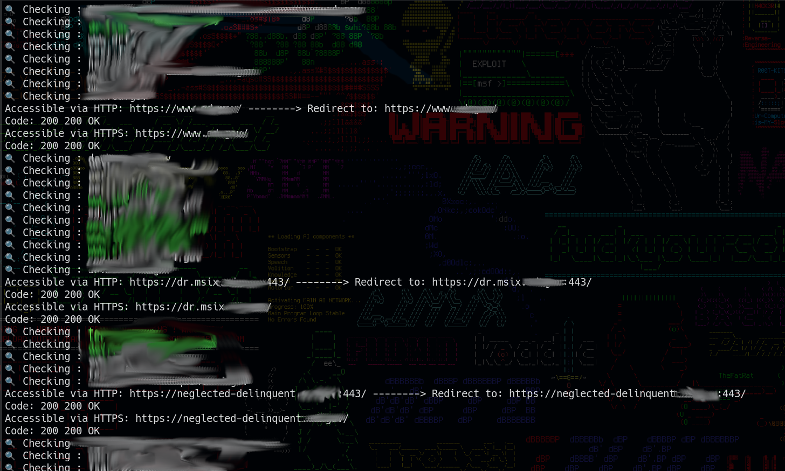

Webshell

The Webshell Tool is a web-based application that simulates a command-line interface within a browser. It allows users to execute shell commands on the server directly from their web interface. This tool is typically used for remote command execution and testing in a controlled environment.
Webshell toolbypassing whitelist validation
This tool is a Bash script designed to facilitate the creation of wordlists tailored for upload attacks targeting web applications. It systematically generates a list of filenames incorporating various characters and common PHP file extensions. By iterating through different combinations of characters such as spaces, newlines, null bytes, carriage returns, slashes, dots, colons, and ellipses, and appending or prepending them to typical PHP file extensions, the script generates a comprehensive wordlist. Each generated filename represents a potential vector for upload-based attacks, helping security researchers and penetration testers assess and fortify the resilience of web applications against such threats.
Bypassing whitelist toolBashReconKit

ReconBash is a lightweight yet powerful reconnaissance toolset, consisting of Bash scripts designed to facilitate network exploration and information gathering. With features including WHOIS lookup, reverse WHOIS lookup, nslookup, reverse IP lookup, and ASN lookup and more, ReconBash provides essential functionalities for investigating domains, IP addresses, and network entities. Whether you're a cybersecurity professional, network administrator, or curious enthusiast, ReconBash equips you with the necessary utilities to conduct thorough reconnaissance tasks directly from the command line.
BashRecon toolxssattack

This Python tool is designed to test web applications for Cross-Site Scripting (XSS) vulnerabilities by injecting payloads into specified URL parameters and detecting JavaScript alerts. It leverages the Selenium library for browser automation, making it easy to interact with web pages programmatically. Resources: Readme: Documentation explaining how to use the tool. Activity: Track the current activity around the project. Project Statistics: Stars: 0 stars (no user endorsements yet), Watchers: 1 watcher (currently monitoring the project), Forks: 0 forks (not yet forked by other users), Releases: No releases published (still in development), Packages: No packages published (ready for your first package), Languages: Python: 100.0%. Suggested Workflows: SLSA Generic Generator: Generate SLSA3 provenance for existing release workflows, Pylint: Lint a Python application with Pylint to ensure code quality, Python Package using Anaconda: Create and test a Python package across multiple Python versions using Anaconda for package management.
xss-tool toolSubdomain Finder Tool

This Python script is a comprehensive tool designed to discover and collect subdomains for a given domain. It integrates multiple subdomain enumeration tools and services to provide a consolidated list of subdomains.
sub enumeration toolDomain Accessibility Checker
This Python tool checks the accessibility of a list of subdomains over HTTP and HTTPS protocols. It performs multi-threaded checks to efficiently handle a large number of domains and outputs the accessible domains to a file.
Domain Checker toolurl parameter scanner

A lightweight Python tool that scans a list of URLs and detects specific query parameters, designed for web scraping and cybersecurity purposes. This script searches through a provided text file containing URLs and identifies occurrences of predefined parameters, displaying the full URL when a match is found..
url parameter scanner